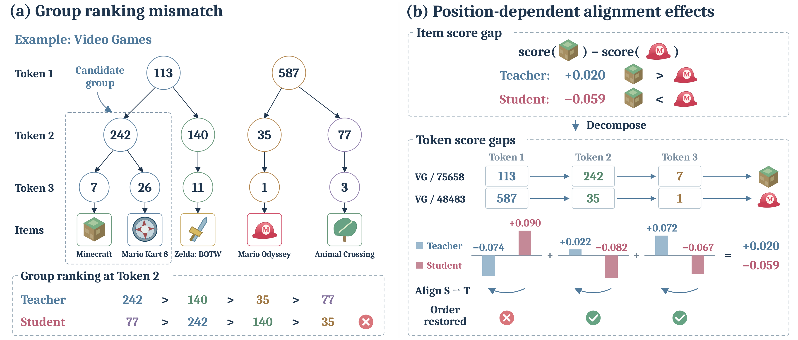
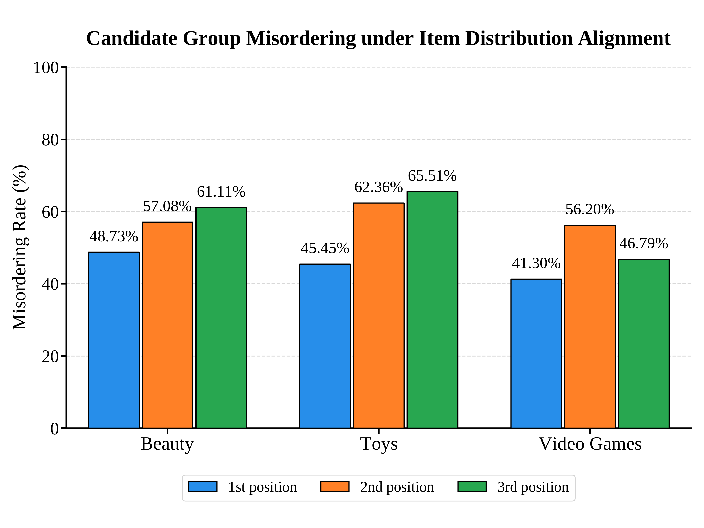
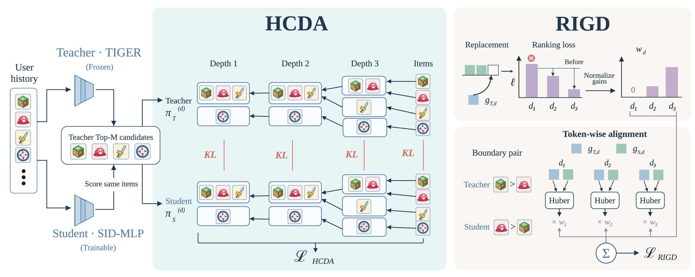

目录 · 8 节
1它到底在解决什么问题？2整体流程3HCDA：让每一层的组概率都对上4RIGD：只在帮得上忙的层上向教师看齐5实验：三种学生、三个数据集上都更好6我认为它的局限7一个推荐/搜索团队可以怎么试8一句话结论把一个 SID 生成式推荐模型蒸馏成小模型时，通常只让学生对齐教师在“最终推荐哪个物品”上的概率分布。这篇论文发现这样不够：只对齐物品分布的学生，在 SID 中间层上给候选组排出的先后，平均有 53.8% 的比较和教师不一致；而对一对物品来说，在不同 SID 位置上向教师看齐，有约七成的情况是有的位置帮忙、有的位置帮倒忙。作者提出 MuSID-KD（一种按 SID 层级做多粒度蒸馏的方法），在三个 Amazon 数据集、三种轻量学生上，NDCG@10 比基础蒸馏平均高 8.31%，比每个设定里最强的其他方法高 1.59% 到 5.13%，线上推理结构完全不变。
想给 SID 生成式推荐降推理成本的团队值得读。它指出了一个容易被忽略的事实：SID 是多层的，教师的知识不只在最后一层的物品概率里，也藏在每一层前缀的排序里，而直接沿用物品级的蒸馏损失会把这部分丢掉。核心思想一句话：一个损失负责让每一层的候选组概率都和教师对齐，另一个损失只在能纠正物品排序的那几层上向教师看齐。代价是训练时间从 27 分钟涨到 49 分钟，数据集都是公开的小规模学术集。
它到底在解决什么问题？
SID 生成式推荐把每个物品编成几层离散 token，模型逐层生成，最后按各层对数概率之和给物品打分。TIGER 这类模型效果好，但 beam search 每一层都要展开很多前缀，线上成本高。于是常见做法是蒸馏：保留教师的历史编码器，把逐层解码换成几个轻量的预测头，让小学生模仿教师。
论文图 1 用游戏推荐举了一个例子。Minecraft 和 Mario Kart 8 的 SID 前两位都是 (113, 242)，在第二层它们属于同一个候选组；Mario Odyssey 的前两位是 (587, 35)，Animal Crossing 是 (587, 77)。按前两位 token 分组，一个组的概率就是组内物品概率之和。教师给这四个组排的顺序是 (113, 242) 最高，其次是 (113, 140)、(587, 35)、(587, 77)，学生却把 (587, 77) 排到了第一。

这里有两个问题。第一，候选组的排序只能从物品概率里间接学到，学生容量有限时，物品概率大致对上，组的先后却可能错。第二，物品分数是各层贡献加起来的，在某一层向教师看齐，可能反而把最终排序推向错误的方向。作者在实验里量了这两件事：
| 诊断 | 做法 | 结果 |
|---|---|---|
| 组排序错误率 | 只对齐物品分布训练学生，在中间层取四个共享上一层前缀的组算一次比较，四个组里只要有一对被学生排反或打平，这次比较就算错 | 三个数据集、各中间层平均 53.8% 出错 |
| 各层方向相反 | 取跨越教师前 K 名边界的物品对，看各层“教师贡献减学生贡献”的符号是否有正有负 | 69.6% 到 71.7% 的物品对如此 |

这两个数字说明，物品级蒸馏在 SID 模型上漏掉了相当多信息，而对所有层一视同仁地对齐，也不是最好的做法。
整体流程
MuSID-KD 只改训练，不改线上。教师先对每个训练请求生成最多 64 个合法候选物品，缓存它们的分数和逐层 token 概率。学生在同一批候选上重新打分，然后算三项损失：
| 损失 | 作用 | 用到什么 |
|---|---|---|
| 交叉熵 | 学用户真实的下一个物品 | 真实标签 |
| HCDA | 每一层的候选组概率分布都和教师对齐 | 候选物品概率按前缀加总 |
| RIGD | 只在能改善物品对排序的层上，向教师的逐层贡献看齐 | 跨越前 10 名边界的物品对 |
HCDA（分层的候选分布对齐）和 RIGD（按排序影响加权的逐层蒸馏）是作者给两项新损失起的名字。总损失是三项加权求和：
和 控制两项蒸馏损失的强度。线上学生照常用历史编码器、按前缀条件的预测头和受约束的 beam search，没有任何新模块。

HCDA：让每一层的组概率都对上
为什么需要这一步？如果学生的物品分布和教师完全一样，那每一层的组分布自然也一样。可小模型只能近似对齐，物品概率差一点，组的先后就可能翻过来，而线上 beam search 正是逐层按组展开的，组排错了，后面的好物品根本进不了 beam。
HCDA 的计算分三步。先在教师给出的候选集上，用温度 τ 把每个物品的分数归一化成概率。再按前缀把概率加起来：第 d 层上，前 d 个 token 相同的物品属于同一组，组的概率就是组内物品概率之和。最后在每一层上算教师和学生的 KL 散度，各层等权相加：
和 是教师和学生在第 层的组分布，最后一层就是物品分布本身。手算一个示意：教师给 Minecraft 0.30、Mario Kart 8 0.10、Zelda 0.25，学生给 0.20、0.15、0.30。物品层上差得不多，但第二层 242 组在教师那里是 0.40，比 140 组的 0.25 高；在学生那里是 0.35，仍比 0.30 高。如果学生再偏一点，组顺序就会反过来，HCDA 会直接惩罚这种偏离。
RIGD：只在帮得上忙的层上向教师看齐
为什么不能每层都对齐？还是用图 1 里的那对物品：教师认为 Minecraft 比 Mario Odyssey 好，得分差 +0.020；学生的得分差是 −0.059，排反了。把得分差拆到三层，教师各层贡献是 −0.074、+0.022、+0.072，学生是 +0.090、−0.082、−0.067。这说明学生排反的原因在第 2、3 层，第 1 层上学生其实比教师更偏向 Minecraft。
试着只把一层换成教师的数，其他层不动，看学生的得分差变成多少：
| 换掉哪一层 | 学生新得分差 | 排序是否纠正 |
|---|---|---|
| 第 1 层 | −0.059 − 0.090 − 0.074 = −0.223 | 否，更糟 |
| 第 2 层 | −0.059 + 0.082 + 0.022 = +0.045 | 是 |
| 第 3 层 | −0.059 + 0.067 + 0.072 = +0.080 | 是 |
第一层向教师看齐反而把这对物品推得更远，所以这一层不该在这对物品上加监督。RIGD 就是把这个“换一层试试”的思路写成权重。
具体做法分四步。先挑物品对：一个在教师前 10 名里，另一个在第 11 到 40 名之间，因为跨过推荐截断线的对子最影响结果。再找两者第一次分叉的那一层，之前的层两者 token 相同，贡献为零。然后对每个可用的层，把学生在这一层的贡献换成教师的，用一个带间隔的 softplus 排序损失比较换前换后，损失下降多少就是这一层的收益，下降为负记为零。最后把各层收益归一化成权重，用带权的 Huber 损失让学生的逐层贡献靠近教师。最后一层只负责区分前缀完全相同的物品，不参与 RIGD 的加权，但它的贡献仍算进得分差。
打个比方，这像几门课的总分排名。学生和标准答案的总分排序反了，老师不会让他每门课都照着改，而是逐门试：哪一门改成标准分后排名能纠正，就重点补哪门。
实验：三种学生、三个数据集上都更好
主实验用 Amazon 的 Beauty、Toys、Video Games 三个数据集，每个请求最多看前 20 次交互，按时间留一法评测。教师固定为 TIGER，学生有三种读出结构：注意力加 MLP、GRU、时序卷积 CNN，都共享教师冻结的历史编码器和四个按前缀条件的预测头。对比方法包括推荐里三种经典的排序蒸馏、两种大模型通用的蒸馏方法，以及两种 SID 专用蒸馏 SID-MLP 和 SmartGR。基础蒸馏指 SID-MLP 的做法：沿着用户真实下一个物品的 SID 前缀，在每一层上让学生的下一个 token 分布对齐教师，再加交叉熵。它和前面诊断里的做法不同，诊断是在教师的候选物品集合上对齐物品概率。下表取 NDCG@10：
| 数据集 | 学生 | TIGER 教师 | 基础蒸馏 | SmartGR | MuSID-KD |
|---|---|---|---|---|---|
| Beauty | MLP | 0.0363 | 0.0356 | 0.0356 | 0.0369 |
| Beauty | CNN | 0.0363 | 0.0319 | 0.0321 | 0.0368 |
| Toys | GRU | 0.0332 | 0.0296 | 0.0315 | 0.0334 |
| Toys | CNN | 0.0332 | 0.0276 | 0.0267 | 0.0328 |
| Video Games | CNN | 0.0512 | 0.0460 | 0.0462 | 0.0508 |
36 个比较（三个数据集、三种学生、四个指标）里 MuSID-KD 全部第一。提升最明显的是 CNN 学生：Toys 上 NDCG@10 比基础蒸馏高 18.84%，几乎追平教师。这说明越弱的学生，越吃亏在漏掉的分层信息上，补上之后收益越大。在 Steam-100K 上提升小一些，平均 2.15%。把 SID 从 RQ-VAE 换成残差 K-means 生成，24 个设定里它仍然全部第一，说明效果不依赖某一种编码方式。
消融落到各部件的贡献。去掉中间层的组对齐、只保留物品分布加 RIGD，NDCG@10 平均低 4.21%；把前缀和概率的对应关系故意打乱再做 HCDA，效果也下降，说明起作用的是真实的分组结构，不是多加了几项 KL。RIGD 一侧的消融用到“残差”：某一层上教师的得分差贡献减去学生的得分差贡献，比如上面那对物品第 1 层的残差是 −0.074 − 0.090 = −0.164。把权重换成各层等权、按残差绝对值加权、或者只给残差为正的层等权，都不如按收益加权，因为绝对值只说明差多少，不说明改了以后排序会不会变好。
诊断指标也对得上：Beauty 上 CNN 学生第二层组分布的 KL 从 0.0663 降到 0.0386，教师最看好的那一组和学生不一致的比例从 31.58% 降到 25.23%。
我认为它的局限
第一，数据规模很小。主实验每个请求只看 20 次交互，绝对 NDCG@10 只有 0.03 到 0.05，所以 1% 到 5% 的相对提升，落到绝对值上往往只有零点一个百分点左右（Beauty 上 MLP 学生从 0.0356 到 0.0369），这种量级的差距在工业规模的长序列数据上是否还在，是最先要确认的事。
第二，训练成本接近翻倍。Beauty 上 MLP 学生训练 200 轮，基础蒸馏 27 分钟，MuSID-KD 49 分钟，显存峰值从 7.4 GB 涨到 9.2 到 9.5 GB。主要开销是构造物品对和逐层替换，候选集和截断线放大后会更明显。
第三，超参数不直观。RIGD 的默认权重 是 31.42，作者只在 Beauty 一个设定上做了敏感性分析，换到别的数据上需要重新调。
一个推荐/搜索团队可以怎么试
- 先做诊断，不改训练：拿现有的蒸馏学生和教师，在一批请求上算中间层的组排序错误率。如果像论文一样接近一半，说明分层信息确实在丢。
- 只加 HCDA：它只需要把已有的候选物品概率按前缀加总，再多算几项 KL，实现成本最低。看 NDCG@10 是否提升，尤其是最轻的那种学生。
- 有效再加 RIGD，从论文的前 10 对第 11 到 40 名开始，按线上实际截断线调整。重点盯训练时间和显存，因为物品对数量随截断线增长。
- 最后比较线上吞吐，确认学生每秒处理的请求数与基础蒸馏持平。论文里三种学生的吞吐与基础蒸馏基本相同，因为蒸馏目标只在训练时计算。
一句话结论
SID 的分层结构本身就是要蒸馏的知识，蒸馏损失应该跟着这个结构逐层设计，而不是只看最后一层的物品概率。
| 维度 | 评价 |
|---|---|
| 问题重要性 | 中高。SID 推荐想上线就绕不开推理成本，蒸馏是主要手段 |
| 方法创新性 | 中高。逐层替换估计收益的权重设计很具体，可以解释为什么有效 |
| 实验证据 | 中。对比方法齐全、诊断和消融对得上，但都是小规模公开数据，没有工业验证 |
| 工程成本 | 低到中。只改训练损失，线上不变；训练时间约翻倍 |
| 是否值得尝试 | 值得，先从 HCDA 和组排序诊断开始 |
| 适用场景 | 已有 SID 生成式推荐教师、想用轻量学生降线上成本的团队 |
读完这篇，你觉得
夜读鸮记下了，谢谢你的反馈。
点一下即可，无需登录；再点一次撤回。只统计匿名次数，不记录你是谁。
讨论
欢迎补充实验细节、复现经验或不同看法。需 GitHub 登录。
正在加载讨论…